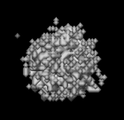
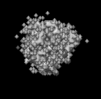
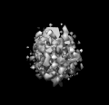
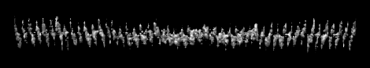
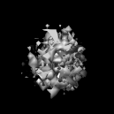
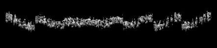
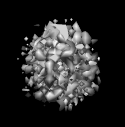
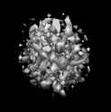
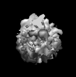

pdbInfoでみた入力ファイルの詳細
pdb2mrcで3Dのmrcファイルに変更
| オプション | 必須項目/選択項目 | 説明 | デフォルト |
|---|---|---|---|
| -i | 必須 | 入力ファイル設定 | NULL |
| -o | 必須 | 出力ファイル設定 | NULL |
| -Rot1 | 選択 | 最初の回転 | 0.0 360.0 10 |
| -Rot2 | 選択 | ２度目の回転 | 0.0 360.0 10 |
| -Rot3 | 選択 | 最後の回転 | 0.0 360.0 10 |
| -EulerMode | 選択 | オイラー角の回転モード設定 | ZOYS |
| -InterpolationMode | 選択 | 展開モード | 1 |
| -AreaMode | 選択 | エリアモード：投影をする全空間の形 0：立方体 1：球 |
0 |
| -m | 選択 | モード | 0 |
| -h | 選択 | ヘルプを表示 |
| モード | 説明 |
|---|---|
| 0 | 投影像の数はそのまま |
| 1 | 回転角を減少させる nRot3=1とRot2の軸が2D画像平面に垂直であるなら、投影像の数を減少させることができる |
| モード | 説明 |
|---|---|
| 0 | 最短距離法 |
| 1 | 線形補間法 |
| 2 | ３次補間法 |
| 3 | 多項式法 |
| 一桁目： | どの軸から回転を始めるか設定 |
| 二桁目： | 回転軸の順番を設定１ |
| O…Z→Y→Xの順に回転軸を変更する E…Z→X→Yの順に回転軸を変更する |
|
| 三桁目： | 回転軸の順番の設定２ |
| Y…順番を維持する N…順番を逆順にする |
|
| 四桁目： | 回転方法を設定 |
| Y…物体そのものをまわす D…座標を移動させる |
| ｘｙ平面 | ｙｚ平面 |
|  |  |
最小 |
0 |
| ｘｙ平面 | ｙｚ平面 | ||
|  |  | 最小 |
0 |
| ｘｙ平面 | ｙｚ平面 | ||
|  |  | 最小 |
0 |
|  | 最小 |
0 |
 |
最小 |
0 |
|  | 最小 |
-0.0325619 |
|  | 最小 |
-5.4667 |